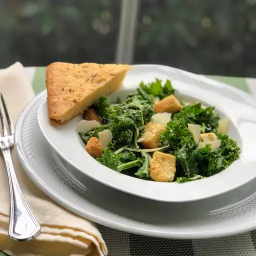

Kale Caesar Salad

Description:
This is a delicious recipe for a Kale Caesar Salad and
is very simple to create on your own. If you follow these
simple steps in the next section, you will be able to enjoy
this tasty and healthy meal in about 10 minutes!
Ingredients
- Kale
- Caesar Dressing
- Parmesan Cheese
- Croutons
- Salt
- Pepper
Steps
- Grab a large mizing bowl to mix your salad in
- In the bowl, add your Kale, Caesar Dressing, and Parmesan Cheese
- Thoroughly mix the ingredients in the bowl
- Once all the ingredients are mixed, add in croutons. Garnish with Salt and Pepper
- Add to serving bowl and enjoy!